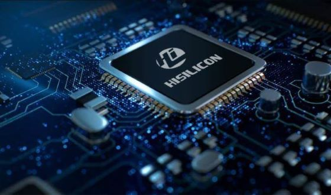

Il chipset è un gruppo di circuiti elettronici presenti sulla scheda madre di un computer. Immagina che la scheda madre sia
come una grande strada e il chipset come un semaforo che regola il traffico. La sua funzione principale è quella di permettere
la comunicazione tra il processore (il cervello del computer), la memoria (dove si conservano i dati e i programmi) e altre parti
come schede grafiche e dispositivi di archiviazione.
Quando accendi il computer, il chipset aiuta a coordinare tutto, assicurandosi che le informazioni possano viaggiare rapidamente
e senza intoppi tra le varie componenti. Un buon chipset può migliorare le prestazioni del computer, ad esempio permettendo di
utilizzare memoria più veloce o connettendo più dispositivi. In sostanza, è fondamentale per il funzionamento armonioso del computer!
La CPU è come il "cervello" del computer: è il pezzo che pensa e fa tutti i calcoli necessari per far funzionare i giochi, le app e
tutto ciò che vedi sullo schermo. Ecco come funziona in modo semplice:
1.Nuclei (Core): Immagina che ogni nucleo sia come una persona che lavora per fare calcoli. Alcune CPU hanno un solo nucleo
(una sola "persona"), altre ne hanno due, quattro, otto o anche di più. Più nuclei ci sono, più operazioni possono fare allo stesso tempo.
2.Velocità di Clock: E' la velocità con cui la CPU lavora, misurata in GHz. Più alta è questa velocità, più velocemente il "cervello"
del computer può fare i calcoli e completare le operazioni.
3.Cache: E' una piccola memoria super-veloce dove la CPU tiene i dati che usa più spesso. E' come avere un blocco per gli appunti
proprio vicino alla scrivania: cosi, quando serve un'informazione, non deve cercarla lontano, ma la trova subito.
4.Architettura: E' il modo in cui la CPU è progettata. Questo può influenzare quanto è potente e quanta memoria (RAM) può usare.
5.Thread: Ogni thread è come un "compito" che il nucleo può svolgere. Con il multi-threading, ogni nucleo può gestire più compiti
alla volta, quindi la CPU lavora ancora più velocemente e in modo più efficiente.
In pratica, la CPU è il capo che coordina tutte le operazioni del computer: decide cosa fare, fa i calcoli e gestisce tutto
per far si che il computer funzioni.
